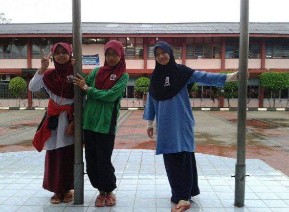
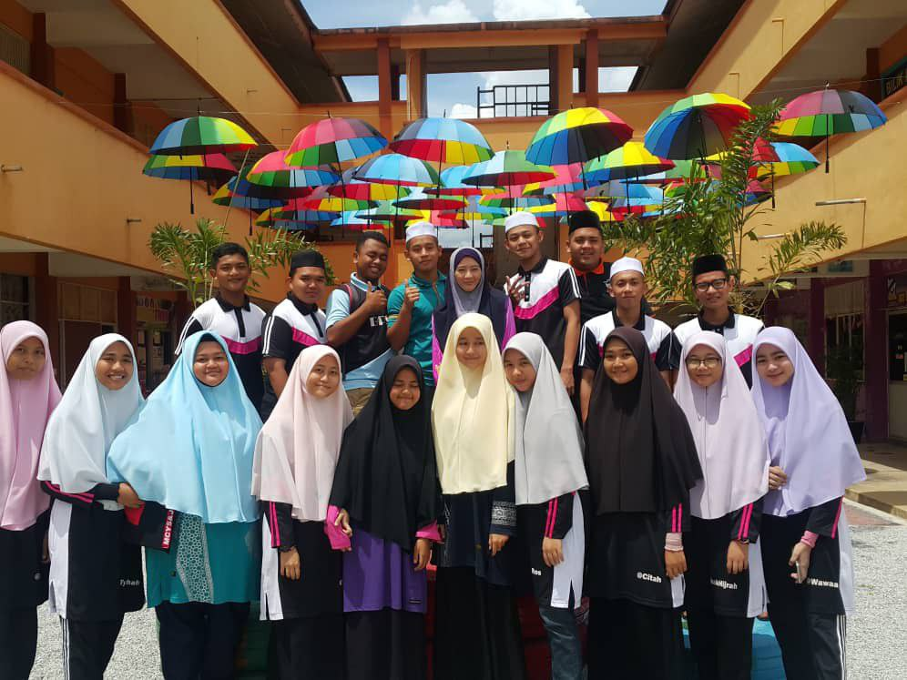
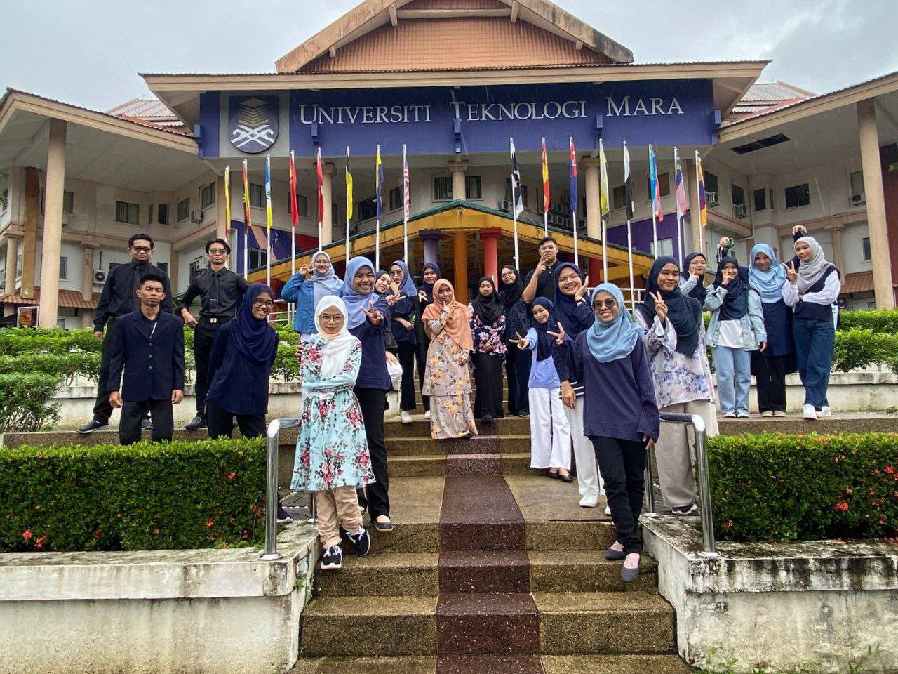

| NAME OF SCHOOL | YEAR | ABOUT |
|---|---|---|
| SEKOLAH KEBANGSAAN PENGKALAN NYIREH | 2009-2014 | SK Pengkalan Nyireh was located in Besut, Terengganu.This is my second school after SK Tengku Mahmud. This school is only 5 minutes from my house, and I go there because I am the daughter of a teacher. I like going to this school because the teachers care about me so much, and I'll never forget that I was one of the best students of UPSR in 2014. |

| NAME OF SCHOOL | YEAR | ABOUT |
|---|---|---|
| SEKOLAH MENENGAH KEBANGSAAN AGAMA NURUL ITTIFAQ | 2015-2019 | I began my education here and continued through the completion of my senior year as an art student. During my time at this school, I held several high positions such as school superintendent, supreme disciplinary council and class secretary. Because of this experience, I am aware that both my capacity for communication and my sense of self-confidence have increased. When I went to a talk session or a seminar, I did not experience any anxiety about having to speak in front of a large group of people. |

UiTM Cawangan Machang Kelantan
| NAME OF UNIVERSITY | YEAR | ABOUT |
|---|---|---|
| UiTM MACHANG | 2020-2023 | I am currently enrolled in an undergraduate programme that will award me a diploma in information management. Due to the fact that Kelantan is my birthplace, I take great pleasure in being here. As I mentioned in my personal information, I am originally from Kota Bharu, which is located in the state of Kelantan, which is widely recognised as a heaven for food lovers. I am able to move freely across the entire state of Kelantan. My love for the natural world stems from a desire to gain a deeper understanding of the region in where I was born. The fact that this campus is so verdant and has everything I need to relax is right here. This campus is one that I would recommend to the next generation if they are undecided about where they should continue their study. |